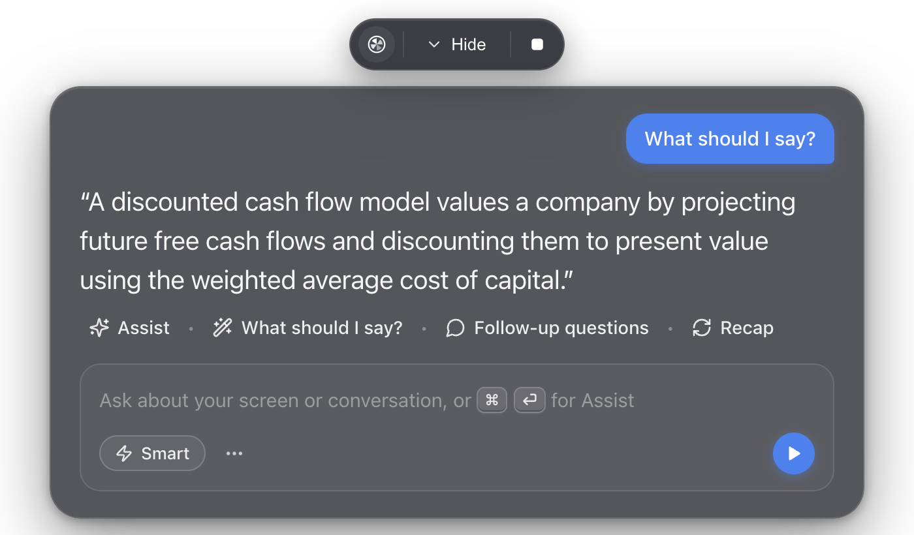

An AI copilot that floats above every app on Windows
cue sees your screen, hears your meetings, and answers in real time. This Windows build adds first-class Dahl and OpenRouter support, chat appearance controls, and selectable auto-scroll speeds.
Windows 11 and Windows 10 2004+ · GPL-3.0 · Installer is unsigned, so SmartScreen may warn.

One panel, three inputs, real answers
cue sits on top of your work and combines what is on screen with what is being said.
Always on top
A small glass panel that stays above other windows, on every virtual desktop.
Screen + mic + meeting audio
Three separate inputs: your screen, your microphone, and system audio from the other side.
Smart assist
One shortcut reads the screen and recent conversation, then tells you what to do next.
What should I say?
Answers from the live meeting audio, in the moment, without typing.
Recap
Turns the whole conversation into a short summary you can re-read.
Chat controls
Text size and boldness, a one-click Clear chat, and five auto-scroll speeds from Off to Instant.
Local transcription
Download a whisper.cpp model and keep speech-to-text on your own machine.
Honest build
No Microsoft process masquerading. This fork builds a normal cue.exe with its own icon.
Free and open
GPL-3.0 source. No account, no subscription, no telemetry. You pay only your AI provider.
Works with the key you already have
Dahl and OpenRouter are first-class providers here, alongside the usual OpenAI-compatible endpoints.
| Provider | What you get |
|---|---|
| Dahl | Fixed base URL, separate fast and smart models, and inline reasoning blocks stripped from the stream. |
| OpenRouter | Fixed base URL with sensible fast and smart defaults, so you can switch models without editing config. |
| OpenAI · Anthropic · Google Gemini | Bring the key you already use. Fast and smart model picks are built in. |
| Azure AI Foundry · DeepSeek · Groq | First-class options in Settings, including custom deployment names for Azure. |
| Ollama · custom endpoint | Point cue at any OpenAI-compatible base URL, including a local server. |
Dahl is chat-only in cue: it answers questions but does not accept screenshots or audio. Use a vision-capable provider for Smart assist and a Whisper model or another key for transcription.
Install in a few minutes
Download the installer, add a key, and optionally download a local transcription model.
- Download
cue-win-x64.exefrom the latest release. - Run it. If SmartScreen appears, choose More info, then Run anyway. The installer is unsigned.
- Add your provider key. Open Settings with
Ctrl+,, pick Dahl, OpenRouter, OpenAI, Anthropic, Gemini or another provider, and paste the key. - Optional: transcribe locally. In Settings → Audio → Local, download a whisper.cpp model such as
base.en. - Use it.
Ctrl+Shift+Enterfor Smart assist,Ctrl+Enterfor What should I say, or type a question and press Enter.
Questions
Short answers to what people ask before installing.
What is cue for Windows?
cue is a free, open-source AI copilot that floats above every Windows app. It can read your screen, hear your microphone and meeting audio, and answer in real time. This fork adds first-class Dahl and OpenRouter support and builds an honest cue.exe.
Is cue free?
Yes. cue is GPL-3.0 open source. You only pay your AI provider for the requests you make, or use a local model where supported.
Does cue support Dahl and OpenRouter?
Yes. Dahl and OpenRouter are first-class providers with fixed base URLs and sensible fast and smart model defaults. OpenAI, Anthropic, Google Gemini, Azure AI Foundry, DeepSeek, Groq, Ollama and custom OpenAI-compatible endpoints also work.
Does cue work on Windows 10?
cue targets Windows 11 and Windows 10 2004 or newer. Screen-share exclusion is best-effort: Windows 10 builds older than 2004 fall back to a black box, and no tool can hide from a phone camera.
Is cue a Cluely alternative?
Yes. cue is an open-source, bring-your-own-key alternative to Cluely-style AI overlays, with screen, microphone and system-audio input plus Smart assist, Recap and Ask anything.
Where is my data sent?
Only to the AI provider you configure. cue has no telemetry. With the local Whisper option, transcription stays on your computer.
Why does Windows SmartScreen warn about the installer?
The installer is not code-signed, so Windows shows a SmartScreen warning. Choose More info, then Run anyway. The build is reproducible from the public source.
Can I use cue in an interview or exam?
cue is intended for legitimate uses such as your own notes, studying, accessibility and practice. A hidden assistant during a proctored exam, job interview or recorded meeting may break that platform's rules and local consent laws. You are responsible for how you use it.